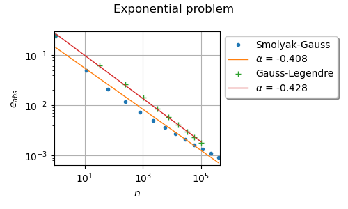

Note
Go to the end to download the full example code
Use the Smolyak quadrature¶
The goal of this example is to use Smolyak’s quadrature. We create a Smolyak quadrature using a Gauss-Legendre marginal quadrature and use it on a benchmark problem. In the second part, we compute the absolute error of Smolyak’s quadrature method and compare it with the tensorized Gauss-Legendre quadrature. In the third part, we plot the absolute error depending on the sample sample and analyze the speed of convergence.
import numpy as np
import openturns as ot
import openturns.experimental as otexp
import openturns.viewer as otv
from matplotlib import pylab as plt
In the first example, we print the nodes and weights Smolyak-Legendre quadrature of level 3.
uniform = ot.GaussProductExperiment(ot.Uniform(0.0, 1.0))
collection = [uniform] * 2
level = 3
print("level = ", level)
experiment = otexp.SmolyakExperiment(collection, level)
nodes, weights = experiment.generateWithWeights()
print(nodes)
print(weights)
level = 3
0 : [ 0.112702 0.5 ]
1 : [ 0.211325 0.211325 ]
2 : [ 0.211325 0.5 ]
3 : [ 0.211325 0.788675 ]
4 : [ 0.5 0.112702 ]
5 : [ 0.5 0.211325 ]
6 : [ 0.5 0.5 ]
7 : [ 0.5 0.788675 ]
8 : [ 0.5 0.887298 ]
9 : [ 0.788675 0.211325 ]
10 : [ 0.788675 0.5 ]
11 : [ 0.788675 0.788675 ]
12 : [ 0.887298 0.5 ]
[0.277778,0.25,-0.5,0.25,0.277778,-0.5,0.888889,-0.5,0.277778,0.25,-0.5,0.25,0.277778]#13
We see that some of the weights are nonpositive. This is a significant difference with tensorized Gauss quadrature.
We now create an exponential product problem from [morokoff1995], table 1, page 221. This example is also used in [gerstner1998] page 221 to demonstrate the properties of Smolyak’s quadrature. It is defined by the equation :
![g(\boldsymbol{x}) = (1 + 1 / d)^d \prod_{i = 1}^d x_i^{1 / d}]()
for any ![\boldsymbol{x} \in [0, 1]^d]() where
where  is the
dimension of the problem.
is the
dimension of the problem.
We are interested in the integral:
![I = \int_{[0, 1]^d} g(\boldsymbol{x}) f(\boldsymbol{x}) d \boldsymbol{x}]()
where  is the uniform density probability
function in the
is the uniform density probability
function in the ![[0, 1]^d]() interval.
interval.
When the dimension increases, the variance goes to zero, but the variation in the sense of Hardy and Krause goes to infinity.
dimension = 5
def g_function_py(x):
"""
Evaluates the exponential integrand function.
Parameters
----------
x : ot.Point
Returns
-------
y : ot.Point
"""
value = (1.0 + 1.0 / dimension) ** dimension
for i in range(dimension):
value *= x[i] ** (1.0 / dimension)
return [value]
g_function = ot.PythonFunction(dimension, 1, g_function_py)
interval = ot.Interval([0.0] * dimension, [1.0] * dimension)
integral = 1.0
print("Exact integral = ", integral)
name = "ExponentialProduct"
Exact integral = 1.0
In the next cell, we evaluate the Smolyak quadrature. We first create a Smolyak experiment using a Gauss-Legendre marginal experiment.
uniform = ot.GaussProductExperiment(ot.Uniform(0.0, 1.0))
collection = [uniform] * dimension
level = 5
print("level = ", level)
experiment = otexp.SmolyakExperiment(collection, level)
nodes, weights = experiment.generateWithWeights()
print("size = ", nodes.getSize())
level = 5
size = 781
Then we evaluate the function values at the nodes, and use the dot product in order to compute the weighted sum of function values.
g_values = g_function(nodes)
g_values_point = g_values.asPoint()
approximate_integral = g_values_point.dot(weights)
lre10 = -np.log10(abs(approximate_integral - integral) / abs(integral))
print("Approx. integral = ", approximate_integral)
print("Log-relative error in base 10= %.2f" % (lre10))
Approx. integral = 1.007384006870824
Log-relative error in base 10= 2.13
We see that Smolyak’s quadrature has produced a quite accurate approximation of the integral. With only 781 nodes in dimension 4, the approximation has more than 2 correct digits.
In the next cell, we use a tensorized Gauss quadrature rule and compute the accuracy of the quadrature.
numberOfMarginalNodes = 5
collectionOfMarginalNumberOfNodes = [numberOfMarginalNodes] * dimension
collection = [ot.Uniform(0.0, 1.0)] * dimension
distribution = ot.ComposedDistribution(collection)
experiment = ot.GaussProductExperiment(distribution, collectionOfMarginalNumberOfNodes)
nodes, weights = experiment.generateWithWeights()
size = nodes.getSize()
print("size = ", nodes.getSize())
g_values = g_function(nodes)
g_values_point = g_values.asPoint()
approximate_integral = g_values_point.dot(weights)
lre10 = -np.log10(abs(approximate_integral - integral) / abs(integral))
print("Approx. integral = ", approximate_integral)
print("Log-relative error in base 10= %.2f" % (lre10))
size = 3125
Approx. integral = 1.0086187030911973
Log-relative error in base 10= 2.06
Using 5 nodes in each dimension leads to a total number of nodes equal to 3125. This relatively large number of nodes leads to an approximate integral which has more than 2 correct digits.
We want to see how the quadrature converges to the true integral when the number of nodes increases and the speed of convergence. To do this, we create a set of helper functions which evaluate the quadrature rule, compute the table of the absolute error versus the number of nodes and plot it.
The next function performs Smolyak quadrature on a function on the unit cube using Gauss-Legendre quadrature rule.
def smolyakQuadrature(g_function, level):
"""
Integrate a function g on the unit cube [0, 1]^d using Smolyak quadrature.
Uses a Gauss-Legendre quadrature rule as the marginal quadrature.
Parameters
----------
g_function : ot.Function
The integrand, with d inputs and dimension 1 output.
level : int
The level of Smolyak quadrature.
Returns
-------
size : int
The number of nodes in the quadrature.
abserr : float
The absolute error.
"""
dimension = g_function.getInputDimension()
uniform = ot.GaussProductExperiment(ot.Uniform(0.0, 1.0))
collection = [uniform] * dimension
experiment = otexp.SmolyakExperiment(collection, level)
nodes, weights = experiment.generateWithWeights()
size = nodes.getSize()
g_values = g_function(nodes)
g_values_point = g_values.asPoint()
approximate_integral = g_values_point.dot(weights)
abserr = abs(approximate_integral - integral)
return [size, abserr]
Similarly, the next function uses the Gauss-Legendre quadrature rule.
def tensorizedGaussQuadrature(g_function, numberOfMarginalNodes):
"""
Integrate a function g on the unit cube [0, 1]^d.
Uses a tensorized Gauss-Legendre quadrature.
Parameters
----------
g_function : ot.Function
The integrand, with d inputs and dimension 1 output.
level : int
The level of Smolyak quadrature.
Returns
-------
size : int
The number of nodes in the quadrature.
abserr : float
The absolute error.
"""
dimension = g_function.getInputDimension()
collection = [ot.Uniform(0.0, 1.0)] * dimension
distribution = ot.ComposedDistribution(collection)
collectionOfMarginalNumberOfNodes = [numberOfMarginalNodes] * dimension
experiment = ot.GaussProductExperiment(
distribution, collectionOfMarginalNumberOfNodes
)
nodes, weights = experiment.generateWithWeights()
size = nodes.getSize()
g_values = g_function(nodes)
g_values_point = g_values.asPoint()
approximate_integral = g_values_point.dot(weights)
abserr = abs(approximate_integral - integral)
return [size, abserr]
The following function plots the absolute error versus the number of nodes and returns the graph. Moreover, it fits a linear least squares model against the data. The model is ([gerstner1998] page 222)

where  is the absolute error,
is the absolute error,  is a constant
parameter representing the absolute error when the number of nodes
is equal to 1,
is a constant
parameter representing the absolute error when the number of nodes
is equal to 1,  is the number of nodes,
is the number of nodes,  is a constant
parameter representing the order of convergence and
is a constant
parameter representing the order of convergence and  is the multiplicative residual.
The logarithm of the previous equation is
is the multiplicative residual.
The logarithm of the previous equation is
![\log(e_{abs}) = \log(c) - \alpha \log(n) + \epsilon_a]()
where  is the additive residual
in logarithmic scale.
This model states that the curve presenting the error depending on the
number of nodes is a line with slope in a log-log plot.
A method with a more negative slope is favored, since it means that the
speed of convergence is faster.
is the additive residual
in logarithmic scale.
This model states that the curve presenting the error depending on the
number of nodes is a line with slope in a log-log plot.
A method with a more negative slope is favored, since it means that the
speed of convergence is faster.
def drawQuadrature(
size_list, abserr_list, quadratureName="Quadrature", pointStyle="bullet"
):
# Plot the quadrature given the list of size and absolute errors.
# Compute least squares fit
data_logn = ot.Sample.BuildFromPoint(np.log(size_list))
data_loge = ot.Sample.BuildFromPoint(np.log(abserr_list))
basis = ot.SymbolicFunction(["log_n"], ["1.0", "log_n"])
designMatrix = basis(data_logn)
myLeastSquares = ot.LinearLeastSquares(designMatrix, data_loge)
myLeastSquares.run()
ls_fit = myLeastSquares.getMetaModel()
logerror_fit = ls_fit(basis(data_logn))
error_fit = np.exp(logerror_fit).flatten()
alpha = myLeastSquares.getLinear()[1, 0]
#
graph = ot.Graph()
cloud = ot.Cloud(size_list, abserr_list)
cloud.setLegend(quadratureName)
cloud.setPointStyle(pointStyle)
graph.add(cloud)
curve = ot.Curve(size_list, error_fit)
curve.setLegend(r"$\alpha$ = %.3f" % (alpha))
graph.add(curve)
return graph
The next two functions plots the Smolyak and tensorized Gauss quadrature.
def drawSmolyakQuadrature(level_max):
print("Smolyak-Gauss Quadrature")
size_list = []
abserr_list = []
for level in range(1, level_max):
size, abserr = smolyakQuadrature(g_function, level)
print("size = %d, level = %d, ea = %.3e" % (size, level, abserr))
size_list.append(size)
abserr_list.append(abserr)
graph = drawQuadrature(size_list, abserr_list, "Smolyak-Gauss", "bullet")
return graph
def drawTensorizedGaussQuadrature(n_max):
print("Tensorized Gauss Quadrature")
size_list = []
abserr_list = []
for n in range(1, n_max):
size, abserr = tensorizedGaussQuadrature(g_function, n)
print("size = %d, n = %d, ea = %.3e" % (size, n, abserr))
size_list.append(size)
abserr_list.append(abserr)
graph = drawQuadrature(size_list, abserr_list, "Gauss-Legendre", "plus")
return graph
We can finally create the graph.
level_max = 14
graph = ot.Graph("Exponential problem", "$n$", "$e_{abs}$", True)
curve = drawSmolyakQuadrature(level_max)
graph.add(curve)
n_max = 11
curve = drawTensorizedGaussQuadrature(n_max)
graph.add(curve)
graph.setLogScale(ot.GraphImplementation.LOGXY)
graph.setLegendPosition("topright")
palette = ot.Drawable.BuildDefaultPalette(4)
graph.setColors(palette)
view = otv.View(
graph,
figure_kw={"figsize": (5.0, 3.0)},
legend_kw={"bbox_to_anchor": (1.0, 1.0), "loc": "upper left"},
)
plt.tight_layout()
plt.show()

Smolyak-Gauss Quadrature
size = 1, level = 1, ea = 2.442e-01
size = 11, level = 2, ea = 4.885e-02
size = 61, level = 3, ea = 2.120e-02
size = 241, level = 4, ea = 1.174e-02
size = 781, level = 5, ea = 7.384e-03
size = 2203, level = 6, ea = 5.026e-03
size = 5593, level = 7, ea = 3.614e-03
size = 13073, level = 8, ea = 2.708e-03
size = 28553, level = 9, ea = 2.094e-03
size = 58923, level = 10, ea = 1.660e-03
size = 115813, level = 11, ea = 1.344e-03
size = 218193, level = 12, ea = 1.107e-03
size = 395973, level = 13, ea = 9.250e-04
Tensorized Gauss Quadrature
size = 1, n = 1, ea = 2.442e-01
size = 32, n = 2, ea = 6.074e-02
size = 243, n = 3, ea = 2.606e-02
size = 1024, n = 4, ea = 1.405e-02
size = 3125, n = 5, ea = 8.619e-03
size = 7776, n = 6, ea = 5.749e-03
size = 16807, n = 7, ea = 4.068e-03
size = 32768, n = 8, ea = 3.008e-03
size = 59049, n = 9, ea = 2.300e-03
size = 100000, n = 10, ea = 1.808e-03
Total running time of the script: ( 0 minutes 7.741 seconds)